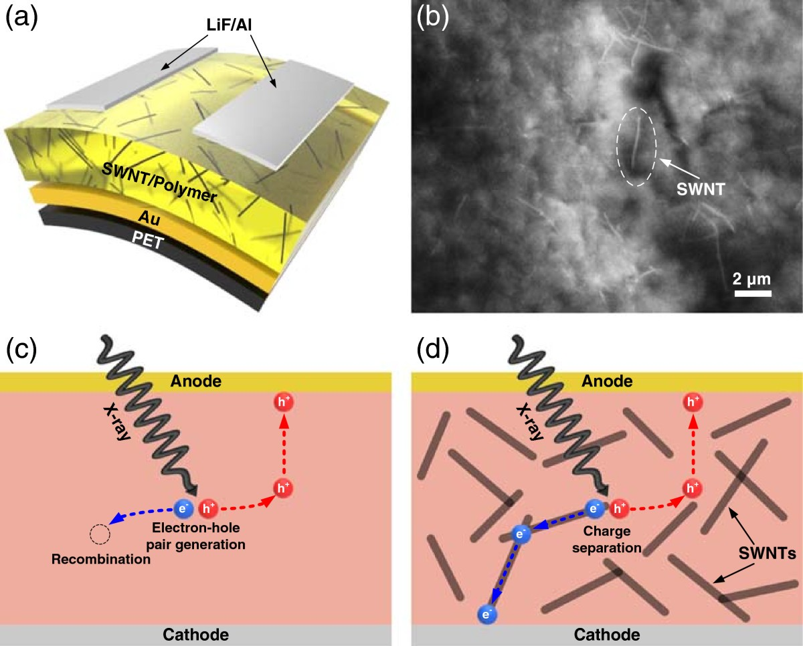

연구 배경과 분류
초록에서 유연 SWNT 고분자 X선 감지층과 전하 수송 상충을 확인했다. 유연성만으로 칩 접합·신축 배선 실증이 되지 않아 integration 기초로 유지한다.
경계 분류: 탐색을 위해 가장 가까운 주제를 배정했습니다. 분류 근거와 교차 연관을 함께 읽어야 하며, 주 테마만으로 연구 범위를 한정할 수 없습니다. 기초 연구의 분류는 직접적인 바이오전자 응용을 입증하지 않습니다.
연구 개요와 핵심 성과
SWNT–고분자 계면이 X선 유래 전하 분리를 돕지만 SWNT 증가가 암전류와 느린 시간 응답을 함께 키웠다.
필러 함량에 따른 감도 이득과 신호 대 잡음·시간 안정성의 상충을 함께 제시했다.

단일벽 탄소나노튜브를 넣은 유연 고분자 X선 검출기의 구조와 전하 분리 원리입니다.
Heetak Han, Sanggeun Lee, Jungmok Seo 외. “Enhancement of X-ray detection by single-walled carbon nanotube enriched flexible polymer composite”. Figure 1. DOI: 10.1186/1556-276x-9-610. CC BY 4.0. 공개 원본 이미지 파일을 바이트 변경 없이 복사했습니다. 크기 변경·자르기·주석·재인코딩은 하지 않았습니다.
남은 과제
편집 질문: 조사 이력·선량률 변화와 굽힘이 최적 함량 판단에 영향을 주는가?
비교 조건
X선 스펙트럼·선량률, 바이어스, 두께·면적과 암전류 기준을 맞춘다.
관련 외부 연구
Organic Semiconducting Single Crystals as Next Generation of Low‐Cost, Room‐Temperature Electrical X‐ray Detectors
외부 초록은 유기 단결정에서 실온 직접 X선 검출과 안정적인 선량률 응답을 보고한다. #16의 필러 복합재와 전하 수송 재료 전략이 다르다.
단결정과 유연 복합막의 두께·바이어스·선량률이 달라 감도만으로 비교하지 않는다.
초록 확인교신저자 확인
서정목 비교신 확인아래는 서정목의 교신저자 여부에 관한 확인 기록입니다. 저자 순서나 별표만으로 판정하지 않으며, 본문 내용 검증과 별도로 읽어야 합니다.
- 교신 고지 확인 출처 ↗
contrib contrib-type="author" corresp="yes": Taeyoon Lee
article/front/article-meta/contrib-group; contrib[@corresp="yes"] · Named publisher author/correspondence information or public published-PDF contact block read; selected body/figure scope is recorded separately.
- 본문 확인 범위
- 출판사/PMC 본문의 라이선스와 Figure 1 전체 캡션을 실제 읽고 원그림을 시각 확인했습니다. 관련 본문을 선택적으로 읽었으며 방법·보충자료 전체를 검토한 것은 아닙니다.
- 보충자료 확인 범위
- 이번 그림·교신저자 검토에서는 보충자료를 읽지 않았으며, SI 전체 검토를 완료했다고 주장하지 않습니다.
- 남은 확인
- 학교 Chrome에서 시간 응답·암전류·굽힘 및 누적 조사 자료를 확인한다. 이번 단계는 대표 그림·권리·교신저자 확인입니다. 기존 선택 본문/초록 검토를 논문 전체 방법·보충자료 심화 검토 완료로 올리지 않습니다. 확인된 서정목 교신 논문이 아니므로 이번 심화 우선 대상이 아닙니다.
COVERAGE & OUTREACH
보도와 소개
논문과의 연관성을 확인한 소개 자료입니다. 언론 게재는 독립 취재나 실험 결과의 추가 검증을 뜻하지 않습니다.
[Acceptance] “Enhancement of X-ray detection by single-wall carbon nanotubes enriched flexible polymer composite” ↗
제목의 single-wall/single-walled 단·복수 표기 차이는 있으나, 한희탁·이상근·Mahata·서정목 및 Nanoscale Research Letters의 X-ray 검출 연구가 #16과 일치합니다.
본문 확인 개별 공지 본문·제목·첫 게시일을 읽었습니다. 함께 표시된 2015년 날짜는 갱신 표기입니다. DOI는 공지에 없으며 연구실 자체 채택 공지로 분류했습니다.
근거와 확인 범위
Crossref 등록 초록과 Europe PMC의 PubMed 초록을 읽었다. 본문은 미검토다.
- 원본 공개 논문 목록 ↗ · #16 · 2026-10-03
- Crossref metadata ↗: Crossref에 등록된 공개 서지 메타데이터만 확인했습니다. 출판사 페이지·초록·본문을 읽었다는 뜻이 아니며, 학교 Chrome 전문 검증은 보류입니다. Crossref에 라이선스 링크가 없으며 재배포 권리는 확인되지 않았습니다.
- Crossref — publisher-supplied abstract ↗
publisher_registered_abstract_via_Crossref · message.abstract; actually read 2026-10-03; publisher full text not implied - Europe PMC — PubMed abstract record ↗
public_abstract_via_Europe_PMC_API · resultList.result[0].abstractText; DOI matched; read 2026-10-03